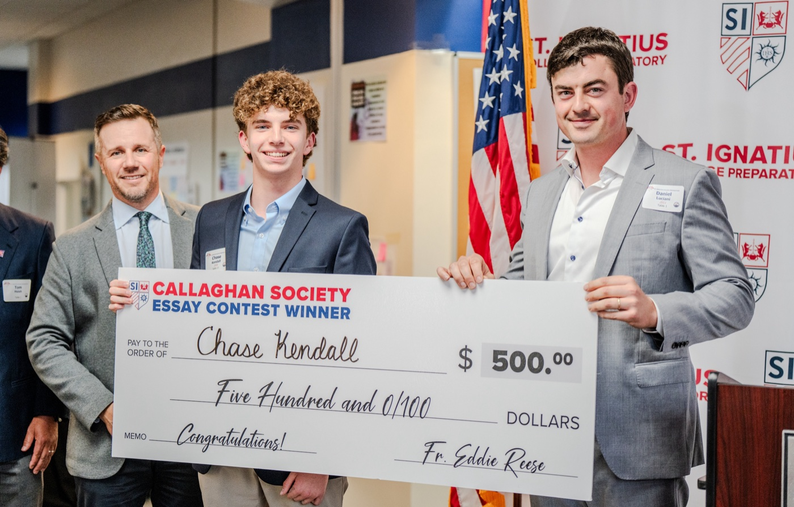

Work
Salutatorian Intro Video
Graduation Address IntroductionCo-Salutatorian
After being selected as co-salutatorians of our graduating class, the other salutatorian and I created the opening film that introduced our address. Together, we wrote, storyboarded, produced, and edited the piece, which played for the audience immediately before we walked onstage. It served as a final creative send-off, closing out our four years of high school before we delivered the salutatorian speech.
Voices in Unity
Callaghan Society Essay ContestTop-three finish · $500 award
Selected as one of the competition’s top three essays from submissions open to students across my school, earning a $500 prize.
Callaghan Essay PromptThe prompt asked writers to make a persuasive case for collaboration and finding common ground in the face of disagreement, using personal experience, history, literature, film, or contemporary issues. Essays also had to connect those ideas to Admiral Daniel J. Callaghan’s legacy of teamwork.

Trapped in My Head
2025 NCTE Achievement Awards in WritingSuperior
National judges evaluated the work for expression of ideas, language use, and unique perspective and voice. I was one of 680 nominated students from 41 states, Washington, D.C., and eight countries.
AAW 2025 Writing PromptThe prompt asked students to explore how literature can heal by helping readers feel seen, understood, or transported into another person’s experience. Writers could respond to books as mirrors, windows, sliding doors, or other forms of representation.